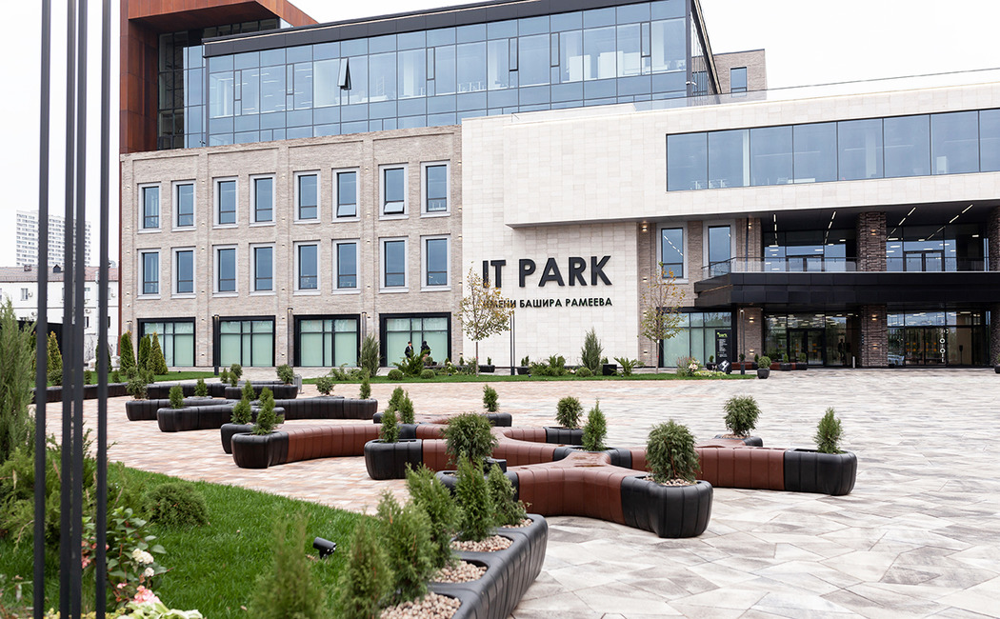
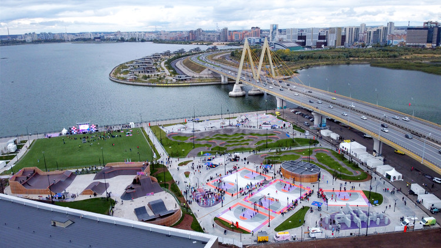
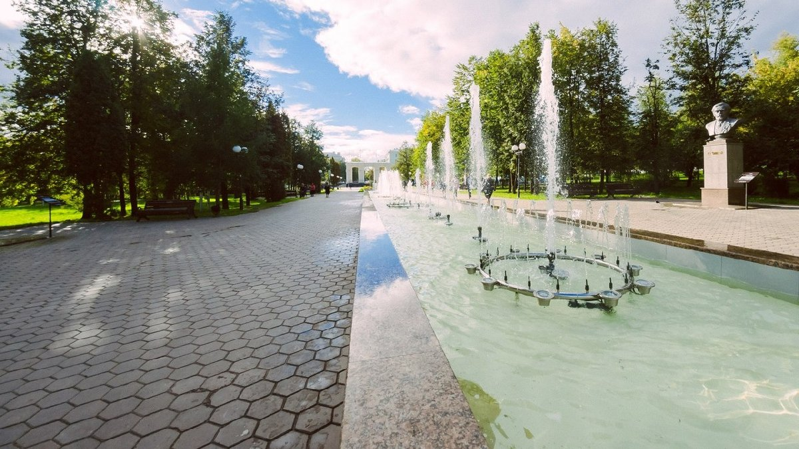
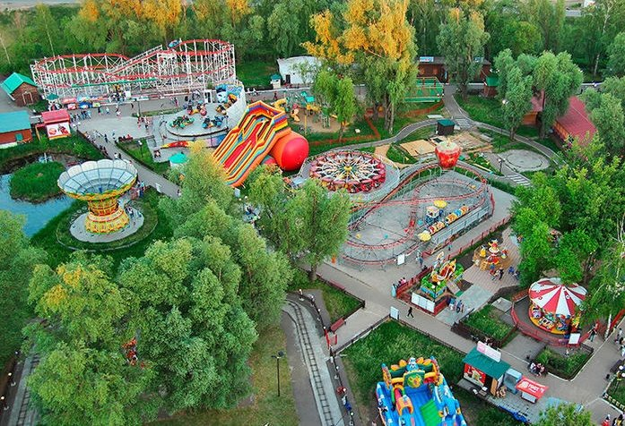

Новый казанский IT-квартал — логическое продолжение выбранного курса на создание комфортных условий для цифровой индустрии. Главная цель — агрегировать в данном деловом квартале стартапы, IT-компании, творческую инициативную молодежь и представителей инвестиционных фондов, привлечь в республику людей, которые создадут новые технологические компании. IT-квартал станет драйвером развития экономики на следующие 20 лет.
УРАМ (перевод с татарского улица) – место, где объединились спортивное и творческое комьюнити. Парк находится в центре Казани и занимает рекордную площадь в 42 000 м2. По формату площадок и качеству инфраструктуры экстрим-парк является уникальным в мировом масштабе.
Парк «Крылья Советов» был заложен в 1939 году и является одним из старейших парков в Казани. Он находится в Авиастроительном районе и посвящён истории самолётостроения в СССР.
Парк с аттракционами «Кырлай» (изначально — «Шурале») открылся на правом берегу реки Казанки в 2004 году, тогда же начал работать и его главный издалека заметный аттракцион — колесо обозрения.
